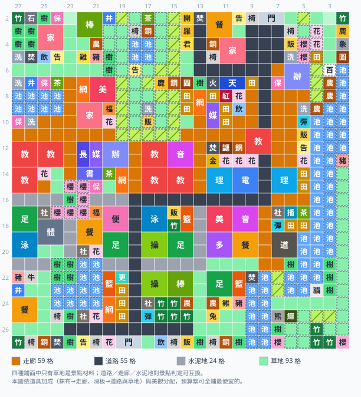

口袋學院物語2 冬郵小鎮完美佈局
第二張地圖「冬郵小鎮」（ヒガシクメールタウン，舊譯東部小鎮，26×26）的完美佈局：一張圖同時成立全部 29 個人氣景點，每一棟都走得到，還示範了破壞 2 格水塘鑿水道，把被水圍住的湖心地接進校園、變成第 4 階段的稀有動物島。可以點下面的按鈕直接載入佈局模擬器。

看法與健康鎮那張相同：格子上的字是設施簡稱，一棟多格建築畫成一個大方塊，虛線深色外框是高地（高地空地填成暖灰），帶斜線的黃綠色是斜坡。四種鋪面（道路／走廊／水泥地／草地）刻意不逐格標字，改看圖下方的鋪面圖例（色塊＋格數）。邊緣數字是遊戲內座標（上方 Y、左側 X）。冬郵小鎮的校門開在地圖上緣的 Y8–Y7，跟健康鎮開在左側完全不同。
冬郵小鎮跟健康鎮差在哪
冬郵小鎮（ヒガシクメールタウン，中文圈舊譯「東部小鎮」）是 26×26 格，比健康鎮多兩欄，可是實際能蓋的地反而更少——光水塘就吃掉 76 格，另外還有 161 格是高地。骨架邏輯（棋盤路網＋4×4 街廓）完全一樣，但地形會逼你改掉幾個習慣：
| 健康鎮 | 冬郵小鎮 | |
|---|---|---|
| 地圖尺寸 | 26×24（座標 X2–X27 / Y2–Y25） | 26×26（座標 X2–X27 / Y2–Y27） |
| 校門位置 | 左側（直式 1×2） | 上緣（橫式 2×1，Y8–Y7） |
| 水塘 | 34 格，集中一處 | 76 格，散在四邊，還圍出一塊湖心地 |
| 高地 | 南北兩塊，邊界自然生成斜坡 | 161 格，多數鋪著草地／竹林，一開始沒有斜坡 |
| 既有地形雜物 | 樹林、花壇 | 田埂路 77 格、竹林、櫻花樹 |
| 可用平地 | 分布比較均勻 | 集中在南半部一大片空白 |
| 路網座標 | X7 / X12 / X17 / X22 ＋ Y21 / Y16 / Y11 / Y6 | X6 / X11 / X16 / X21 / X26 ＋ Y23 / Y18 / Y13 / Y8 / Y3 |
| 幹道脊椎（鋪道路） | X17 ＋ Y11 / Y16 | X16 ＋ Y8 / Y18（北門 → Y8 南下 → X16 西行 → Y18 南下 → 南門） |
| 鋪面配比 | 走廊 101／道路 84／草地 75／水泥地 14（走廊 37%） | 草地 119／走廊 77／道路 82／水泥地 16（走廊 26%） |
冬郵小鎮特有的四個坑
- 田埂路是「不能走」的。冬郵小鎮原本就鋪了 77 格田埂路，看起來像路，但在遊戲的動線判定裡它跟樹林一樣不可通行。原地形那間網球場、百葉箱與小農場之所以一開始就走不到，正是被田埂路包住。做法很簡單：要當路用的田埂路一律鋪掉（幹道脊椎鋪道路、其餘街道依分區鋪走廊或道路），剩下的留著當景觀——本圖 77 格裡留了 38 格。
- 草地高地要用「擦」的開坡道。斜坡不是一種可以蓋的東西，它是高低差自動生成的——只有「空地」而且比隔壁高一階的格子才會變成斜坡。冬郵小鎮的高地上鋪滿草地與竹林，所以整片高地一開始一個坡道都沒有，學生根本上不去。解法是把高地邊界那一格擦成空地（遊戲裡就是用橡皮擦點一下），坡道就自己長出來。本圖只擦了 4 格就把北丘與東南高地一次打通，全圖斜坡從 19 格變成 25 格。
- 水塘可以拆——東南湖心地只要鑿 2 格就進得去，而且這張圖非鑿不可。地圖右下角有一塊 39 格的陸地被水塘整圈圍住，原地形上面還放了兩間養豬小屋（X13/Y2、X14/Y2）。乍看是死地，但實機上水塘可以直接被建設覆蓋、破壞成平地，所以那只是「要不要開路」的問題。本圖在 X21/Y5 與 X21/Y4 破壞兩格水塘、鋪成走廊當木橋（湖心那一段 X21 大道鋪的是道路，這兩格水道橋是刻意留的例外），把 X21 那條橫向大道直接延伸過去——一次打通 15 格動線。鑿通之後這塊地不是拿來留白的：它就是本圖第 4 階段的稀有動物島（熊貓 X24/Y5、無尾熊 X25/Y6、鱷魚 X27/Y7）加櫻花景觀帶，「清爽」（映山紅 X23/Y4＋長椅 X24/Y4＋草地）也成立在島上，兩間原生養豬小屋原地保留、全部走得到。把那兩格封回水塘實測，島上會有 5 棟建築走不到（兩間原生養豬小屋、熊貓、無尾熊、鱷魚，再加島上那張長椅）。這是全圖唯一動到的水塘，其餘 74 格一格不動。
- 校門在北緣，所以動線是由北往南。健康鎮從左側進場，冬郵小鎮從上方進場。原有的校舍、辦公室、教室全擠在右上角，主幹道要先從校門往下打通，再往南展開。本圖在南緣 Y19–Y18 加開第二座校門，南區的教學樓與農牧園區就不必繞回北邊。
分區規劃
冬郵小鎮的景點集中在北半部（X2–X15）——因為原有校舍與高地都在那裡，設施可以互相共用；南半部（X17–X27）那一大片空地留給教學樓、農牧與運動園區，最東南的湖心則是第 4 階段才動工的動物島。分區名跟下面「階段 × 分區」那張表是同一套，可以互相對照；最後一欄是該區的街道鋪面。
- 舊校舍帶（X2–X10 全寬）· 走廊 · 最北一帶＝第 1 階段核心遊戲一開始就給的辦公室、教室、網球場、廁所、彈跳床都在這裡，全部保留原位；校長室緊貼既有辦公室，讓「學習」與「選舉」共用同一間。11 個景點成立在這一帶：北段（X2–X5）力量、水岸、好友、選舉、學習、家庭；南段（X7–X10）運動、吃醋、開羅、黃昏、熱血。原本被田埂路圍死的網球場，改鋪走廊後就通了。南段還多了一組運動設施：「熱血」的足球場（X7/Y22）＋體育館（X7–X8/Y21–Y20）＋游泳池（X9–X10/Y22–Y21）——體育館與游泳池都是 2×2，這一組 9 格幾乎佔滿一個街廓；旁邊的棒球場（X10/Y20）配上北丘高地的坡道就是「黃昏」。最北那一排街廓（X2–X5）我們特別標成第 1 階段專區，產生器不會把 3、4 階段才解鎖的材料蓋進去。
- 北丘公園（X7–X10 / Y17–Y14）· 草地步道地圖正中央偏北那塊高地。原本鋪滿田埂路與空地、一個坡道都沒有，整理後放了 6 棟小型設施（茶室、長椅、銅像、公告欄、洗手間、販賣機），每一列最外側留成步道接上坡道——公園性質的高地，步道鋪草地當自然小徑。
- 中北過渡帶（X12–X15 全寬）· 走廊密度最高的一段，13 個景點擠在這裡：埋伏、約會、生物、怪談、藝術、時尚、特盛、購物、澀谷、名門、宇宙、青空、非洲。設施可以被多個景點共用，越密集越省錢——光是 X12/Y17 那一個 4×4 窗口就同時成立「怪談」「藝術」「生物」三個景點；「青空」「非洲」共用的飼育長頸鹿與飼育大象也在這一區（X15/Y12、X15/Y11）。
- 三棟年級棟＋生活機能＋南門廣場（X17–X20）· 走廊 · 第 2 階段3 年級棟（Y27–Y24）、1 年級棟（Y22–Y19）、2 年級棟（Y17–Y14），每棟 3 間教室、共 9 間；再往東是生活機能區（廣播室、遊戲區、進路室、多功能室）與南門廣場（Y7–Y4）。
- 農牧園區（X22–X25 / Y27–Y19）· 道路 · 第 3 階段小農場、養雞、養豬、養牛、養兔、飼鴨與飼育鼴鼠——基礎家畜全部留在西側，稀有動物才上湖心島。成立「菜園」「燒水」「熱情」。農牧區是室外場所，街道鋪道路（滑板在道路與草地上加速）。
- 運動園區（X22–X25 / Y17–Y9）· 走廊＋水泥門前廣場 · 第 3 階段體育館（X22–X23/Y12–Y11）、游泳池（X24–X25/Y12–Y11）、道場、操場、棒球場、彈跳床、社團教室，成立「動作」。南緣加開的第二座校門就在這一帶（Y19–Y18），學生不必繞整張地圖。體育館／泳池／道場的門前另外鋪了水泥廣場——2×2 的大型運動設施門面寬，這一區的門前廣場就占 9 格，北區「熱血」那一組占另外 7 格，剛好是全圖那 16 格水泥地。
- 湖心動物島（X22–X27 / Y7–Y4）· 道路 · 第 4 階段鑿開水道後才進得去的那塊地，本圖規劃成後期稀有動物島：熊貓（X24/Y5）、無尾熊（X25/Y6）、鱷魚（X27/Y7），配上櫻並木與湖畔綠意。「清爽」（映山紅＋草地＋長椅）也成立在島上——映山紅 X23/Y4、長椅 X24/Y4，配島上大片草地。島上的一切（含兩間原生養豬小屋）都只靠那條 2 格水道進出，所以水道是這一區的前提，不是裝飾。
- 東緣高地與湖心高台（X7–X27 / Y2）· 草地步道地圖最東緣那條高地草坡，原生的兩間養豬小屋在 X13/Y2、X14/Y2（保留原位），其餘維持草地與竹林的湖畔綠意，不硬塞建築——這裡整片是原生草地而不是空地，算不出建築位置，硬要擦成空地反而會讓走不到的格子變多。
- 南緣步道（X27 / Y27–Y9）· 道路最南那一排只有 1 格深，鋪成散步道，放幾張長椅與銅像。
四種鋪面在這張圖上怎麼分
遊戲的通行鋪面有道路（外通路）、走廊（木造廊下）、水泥地（パネル廊下）、草地（芝生）四種。四種都能走，而且對 4×4 景點判定完全等價——只有草地本身另外是「菜園」「力量」「清爽」的材料。所以怎麼鋪不影響那 29 個景點，純粹是道具加成與美觀的取捨（通用規則寫在這裡），這張圖的分配是：
| 鋪面 | 格數 | 鋪在哪 | 為什麼 |
|---|---|---|---|
| 草地 | 119 | 街廓內部的小徑與中庭、北丘公園與湖心高台的步道 | 草地是三個景點的材料，鋪多只會加分；冬郵兩塊高地都是公園性質，步道全鋪草徑，所以草地比健康鎮那張多得多 |
| 走廊 | 77 | 舊校舍帶、中北過渡帶、年級棟、生活機能、南門廣場、運動園區的街道；X21/Y5–Y4 的水道橋 | 學生最密集的地方。道具「抹布」在走廊加速，「相機組／寫生」的打工收入按走廊格數算。水道橋刻意留走廊＝木橋意象，是幹道規則的唯一例外 |
| 道路 | 82 | 幹道脊椎 X16 ＋ Y8 ／ Y18（串起北門與南門）、農牧園區、北丘公園、東緣高地、湖心島與南緣步道的街道 | 室外主動線的正確語意；道具「滑板」在道路與草地上加速 |
| 水泥地 | 16 | 體育館／泳池／道場的門前廣場，共 12 處（每處 1–2 格） | 讓大型運動設施有個像樣的正門。冬郵有兩組體育館＋游泳池（南區運動園區與北區「熱血」那一組），2×2 的門面寬，所以水泥廣場比健康鎮那張還多 |
29 個景點的成立位置
座標是該景點 4×4 判定範圍的左上角，用遊戲內的顯示方式（X 由上而下、Y 由左而右）。
| 景點 | 座標 | 需要設施 | 屬性加成 |
|---|---|---|---|
| 運動 | X9 / Y23 | 操場＋籃球場＋販賣機 | 體育+3 頭腦+3 態度+2 |
| 約會 | X12 / Y22 | 網球場＋樹林／櫻花樹＋圖書室 | 文系+2 理系+3 人氣+2 態度+2 |
| 好友 | X2 / Y27 | 飲水處＋保健室＋茶室 | 文系+3 運動+2 人氣+2 |
| 怪談 | X12 / Y17 | 音樂室＋理科室＋焚化爐 | 理系+3 頭腦+3 |
| 學習 | X2 / Y25 | 校長室＋圖書室＋多媒體教室 | 文系+3 理系+3 態度+3 |
| 藝術 | X12 / Y17 | 美術室＋音樂室＋多功能室 | 理系+3 運動+3 |
| 家庭 | X2 / Y17 | 保健室＋家政室＋洗手間 | 文系+2 體育+2 人氣+3 |
| 購物 | X11 / Y27 | 福利社＋便利商店＋餐廳 | 體育+3 運動+3 態度+1 |
| 特盛 | X11 / Y27 | 養豬小屋＋養牛小屋＋餐廳 | 體育+5 頭腦+4 |
| 菜園 | X21 / Y17 | 草地＋小農場＋飲水處 | 理系+2 運動+2 人氣+2 態度+2 |
| 黃昏 | X7 / Y22 | 樹林／櫻花樹＋斜坡＋棒球場 | 文系+3 體育+3 人氣+3 態度+3 |
| 力量 | X2 / Y23 | 水井＋樹林／櫻花樹＋草地 | 文系+3 體育+3 頭腦+2 態度+2 |
| 時尚 | X11 / Y20 | 網球場＋美術室＋家政室 | 文系+3 理系+3 人氣+2 態度+2 |
| 熱情 | X19 / Y27 | 足球場＋籃球場＋焚化爐 | 理系+3 體育+3 人氣+2 態度+2 |
| 埋伏 | X12 / Y8 | 公告欄＋巨石＋洗手間 | 文系+3 體育+1 頭腦+2 人氣+2 |
| 清爽 | X21 / Y5 | 映山紅＋草地＋長椅 | 文系+3 理系+3 人氣+2 態度+2 |
| 水岸 | X2 / Y17 | 水塘＋洗手間＋水井 | 文系+2 理系+3 頭腦+2 |
| 生物 | X12 / Y17 | 理科室＋電腦室＋飼育鼴鼠 | 理系+3 頭腦+2 運動+2 人氣+2 |
| 燒水 | X22 / Y27 | 焚化爐＋家政室＋飲水處 | 文系+1 理系+1 人氣+1 態度+1 |
| 選舉 | X2 / Y27 | 校長室＋辦公室＋茶室 | 理系+2 體育+3 運動+2 人氣+2 |
| 吃醋 | X10 / Y19 | 焚化爐＋餐廳＋家政室 | 理系+3 體育+2 頭腦+2 態度+2 |
| 澀谷 | X12 / Y27 | 足球場＋社團教室＋便利商店 | 文系+3 體育+1 人氣+2 |
| 熱血 | X6 / Y24 | 足球場＋體育館＋游泳池 | 文系+2 理系+3 頭腦+3 運動+3 |
| 動作 | X7 / Y27 | 道場＋社團教室＋彈跳床 | 體育+3 頭腦+2 運動+2 |
| 名門 | X11 / Y12 | 銅像＋金像＋電腦室 | 文系+3 體育+3 人氣+3 態度+3 |
| 青空 | X12 / Y13 | 飼育長頸鹿＋銅像＋圖騰柱 | 文系+3 頭腦+2 人氣+2 |
| 非洲 | X12 / Y13 | 飼育長頸鹿＋飼育大象＋圖騰柱 | 文系+5 理系+3 態度+2 |
| 宇宙 | X11 / Y22 | 宇宙火箭＋天象館＋多媒體教室 | 理系+3 頭腦+2 人氣+2 |
| 開羅 | X4 / Y27 | 金開羅君＋開羅君像＋開羅君房間 | 文系+5 理系+5 人氣+3 態度+3 |
29 個景點全開的屬性加成合計跟健康鎮那張一樣：文系 +49、理系 +49、人氣 +37、體育 +35、態度 +32、頭腦 +29、運動 +19——加成綁在景點上，跟蓋在哪個城鎮無關。
用到的設施清單
沒有標數字的表示只蓋一棟。跟健康鎮那張相比，冬郵小鎮多用了小農場 ×6與櫻花樹 ×12（農牧園區大，湖心島與兩塊高地都鋪櫻並木），少用了操場（×2 對 ×8）、道場（×2 對 ×4）與社團教室（×3 對 ×4）——南半部空間夠大，同一種設施不必為分散的景點重複蓋。兩張圖的體育館與游泳池都只有 ×2：這兩種是 2×2，一組「熱血」就要 9 格，蓋第三組划不來。最後一列的草地／走廊／道路／水泥地就是上面那張鋪面表的格數。
| 分類 | 設施 |
|---|---|
| 生活與設施 | 便利商店、保健室 ×2、公告欄 ×3、圖騰柱、宇宙火箭、廣播室、更衣室、水井 ×2、洗手間 ×5、焚化爐 ×2、百葉箱、福利社、茶室 ×2、販賣機 ×4、遊戲區、金像、金開羅君、銅像 ×5、長椅 ×6、開羅君像、飲水處 ×4、餐廳 ×2 |
| 教室與專科 | 圖書室 ×2、多功能室 ×2、多媒體教室 ×2、天象館、家政室 ×4、教室 ×9、校長室、校門(上下用) ×2、理科室、美術室 ×2、辦公室 ×2、進路室、開羅君房間、電腦室 ×2、音樂室 |
| 運動與社團 | 彈跳床 ×3、操場 ×2、棒球場 ×2、游泳池 ×2、社團教室 ×3、籃球場 ×2、網球場 ×2、足球場 ×3、道場 ×2、體育館 ×2 |
| 動植物農牧 | 小農場 ×6、飼育大象、飼育無尾熊、飼育熊貓、飼育長頸鹿、飼育鱷魚、飼育鼴鼠 ×2、飼鴨小屋、養兔小屋、養牛小屋、養豬小屋 ×3、養雞小屋 |
| 環境地形 | 巨石、映山紅 ×2、樹林 ×9、櫻花樹 ×12、水塘 ×74、水泥地 ×16、田埂路 ×38、竹林 ×19、花壇 ×8、草地 ×119、走廊 ×77、道路 ×82 |
階段 × 分區：哪一階做哪一區
遊戲的學校排名分四階段（農村學園 → 發展學園 → 有望學園 → 名門學園），設施是一階一階解鎖的。冬郵小鎮的校門在北緣，所以整張圖的擴張方向是由北往南、最後跳到東南湖心。
下面這張表是從這張圖的成品反推出來的，不是我們手寫的規劃書：每個景點的階段＝它需要的材料裡「最晚解鎖的那一個」，所在分區＝它 4×4 判定窗口左上角落在哪個街廓。跨階段的景點兩者都標，所以偶爾會看到階段與分區不對盤的組合——後期景點落在前期分區，是因為它跟前期景點共用了現成的設施、只差最後一件材料；前期景點落在後期分區，則是因為它的材料剛好被後期那一區順手蓋齊了。我們照實標，不替它圓場。解鎖條件標「（推定）」的，代表遊戲內的「發展指南」沒有收錄，是我們依實機經驗推的。
| 階段 | 景點 | 所在分區（代表窗口） | 關鍵材料的解鎖條件 |
|---|---|---|---|
| 1・開局（農村學園） | 力量 | 舊校舍帶（X2 / Y22） | 水井：一開始就可建 |
| 1・開局（農村學園） | 水岸 | 舊校舍帶（X2 / Y17） | 水塘：地圖既有地形（可被建設破壞）（推定） |
| 1・開局（農村學園） | 好友 | 舊校舍帶（X2 / Y27） | 飲水處：一開始就可建 |
| 1・開局（農村學園） | 埋伏 | 中北過渡帶（X12 / Y7） | 公告欄：一開始就可建 |
| 1・開局（農村學園） | 菜園 | 農牧園區（X22 / Y27） | 草地：地形筆刷，一開始就可鋪（推定） |
| 1・開局（農村學園） | 選舉 | 舊校舍帶（X2 / Y27） | 校長室：一開始就有（全校唯一）（推定） |
| 2・發展學園 | 約會 | 中北過渡帶（X12 / Y22） | 網球場：發展學園＋運動 40 |
| 2・發展學園 | 家庭 | 舊校舍帶（X2 / Y17） | 家政室：頭腦 80 |
| 2・發展學園 | 清爽 | 湖心動物島（X22 / Y7） | 長椅：升上發展學園 |
| 2・發展學園 | 運動 | 舊校舍帶（X9 / Y22） | 操場：發展學園＋運動 50 |
| 2・發展學園 | 燒水 | 農牧園區（X22 / Y27） | 家政室：頭腦 80 |
| 3・有望學園 | 生物 | 中北過渡帶（X12 / Y17） | 理科室：有望學園＋頭腦 90 |
| 3・有望學園 | 吃醋 | 舊校舍帶（X10 / Y19） | 餐廳：有望學園＋態度 75 |
| 3・有望學園 | 怪談 | 中北過渡帶（X12 / Y17） | 理科室：有望學園＋頭腦 90 |
| 3・有望學園 | 時尚 | 中北過渡帶（X12 / Y22） | 美術室：音樂室×1＋頭腦 90 |
| 3・有望學園 | 特盛 | 中北過渡帶（X12 / Y27） | 養牛小屋：大型家畜，有望學園前後（推定） |
| 3・有望學園 | 動作 | 運動園區（X22 / Y12） | 道場：體育館×2 |
| 3・有望學園 | 黃昏 | 舊校舍帶（X7 / Y22） | 棒球場：網球場×2＋運動 80 |
| 3・有望學園 | 熱情 | 農牧園區（X22 / Y27） | 足球場：棒球場×1＋運動 105 |
| 3・有望學園 | 學習 | 舊校舍帶（X2 / Y25） | 多媒體教室：升上有望學園 |
| 3・有望學園 | 澀谷 | 中北過渡帶（X12 / Y27） | 足球場：棒球場×1＋運動 105 |
| 3・有望學園 | 購物 | 中北過渡帶（X12 / Y27） | 便利商店：超大型學校（學生 18＋景點 3 種＋第 4 年＋平均 300 分） |
| 3・有望學園 | 藝術 | 中北過渡帶（X12 / Y17） | 美術室：音樂室×1＋頭腦 90 |
| 4・名門學園 | 名門 | 中北過渡帶（X12 / Y12） | 金像：名門學園後的高階紀念物（銅像的上位）（推定） |
| 4・名門學園 | 宇宙 | 中北過渡帶（X12 / Y22） | 宇宙火箭：名門學園後的壓軸建物（與天象館同期）（推定） |
| 4・名門學園 | 青空 | 中北過渡帶（X12 / Y12） | 飼育長頸鹿：觀光級稀有飼育，名門學園後（推定） |
| 4・名門學園 | 非洲 | 中北過渡帶（X12 / Y12） | 飼育長頸鹿：觀光級稀有飼育，名門學園後（推定） |
| 4・名門學園 | 開羅 | 舊校舍帶（X7 / Y27） | 金開羅君：開羅君系列＝全遊戲最終獎勵（推定） |
| 4・名門學園 | 熱血 | 舊校舍帶（X7 / Y24） | 游泳池：名門學園＋運動 110＋體育館 |
分佈是 1 階 6 個、2 階 5 個、3 階 12 個、4 階 6 個——一半以上要等到有望學園之後，所以前期不用急著把南區的框填滿。
實際照著蓋的順序建議
照上面那張表，四個階段各做這些事：
- 第 1 階段（農村學園）：打通主幹道，收 6 個便宜景點。從北緣校門沿 Y8 往下鋪出幹道脊椎（Y8 → X16 → Y18 → 南門，這一路鋪道路），再接上 X6 與 X11 兩條橫向大道，其餘街道鋪走廊。擋路的田埂路直接鋪掉——它不能走，留著只會讓動線繞遠路（原地形那間網球場就是被田埂路圍死的）。接著把 1 階段那 6 個景點做掉：舊校舍帶的力量、水岸、好友、選舉，中北過渡帶的埋伏，還有一個菜園——材料是水井、水塘、飲水處、草地、公告欄與開局就有的校長室，幾乎不花錢。（表上菜園標在農牧園區，那是因為它的材料被第 3 階段那一區順手蓋齊了；想早點吃到加成的話，在北半部另外湊一組草地＋小農場＋飲水處也一樣成立。）工程要點：校長室全校只有一間，一開始就要蓋在既有辦公室旁邊，「選舉」與「學習」才共用得到。最北那一排街廓（X2–X5）我們刻意只留給第 1 階段的東西，別在那裡先佔位。
- 第 2 階段（發展學園）：擦坡道、開北丘公園、立年級棟的框。升上發展學園後解鎖長椅、操場、網球場，家政室也在這一階前後到手，「清爽」「運動」「約會」「家庭」「燒水」5 個景點一起收。工程要點一（開坡道的時機）：高地上蓋任何東西之前，先把坡道擦出來。斜坡是高低差自動生成的，只有「空地」而且比隔壁高一階的格子才會變成斜坡——冬郵的高地鋪滿草地與竹林，所以一開始一個坡道都沒有。把邊界那一格擦成空地（遊戲裡用橡皮擦點一下），坡道就自己長出來，本圖只擦 4 格就把北丘與東南高地一次打通（全圖斜坡 19 → 25 格）。這一步很便宜卻很關鍵：晚做的話，高地上蓋的東西全部都會變成走不到。同時照年級把三棟教學樓的框留好（X17–X20），學生多了再填教室，不要臨時找空地插。
- 第 3 階段（有望學園）：南區開發，一次收 12 個景點。這一階解鎖理科室、美術室、餐廳、便利商店、棒球場、足球場、道場、多媒體教室，是景點收成最猛的一段（生物、吃醋、怪談、時尚、特盛、動作、黃昏、熱情、學習、澀谷、購物、藝術）。農牧園區與運動園區都在這一階動工。工程要點二（第二座校門的時機）：南區動工前先在南緣 Y19–Y18 加開第二座校門。可達性是從每一座校門同時往外算的，先開門再蓋，南半部的教學樓與農牧、運動園區就不必繞回北邊那座門。
- 第 4 階段（名門學園）：鑿水道、做湖心動物島與壓軸建物。金像、宇宙火箭、天象館、開羅君系列、飼育長頸鹿／大象、游泳池與三隻稀有動物都在這一階，對應「名門」「宇宙」「青空」「非洲」「開羅」「熱血」6 個景點。工程要點三（鑿水道的時機）：湖心動物島動工之前，先鑿 X21/Y5 與 X21/Y4 那兩格水塘、鋪成走廊當木橋。島上的一切都只靠這條水道進出——熊貓、無尾熊、鱷魚、「清爽」用的那張長椅，還有兩間原生養豬小屋，不鑿的話這 5 棟全部走不到。這不是可跳過的美化工程，是動物島的前提；而且擺在第 4 階段剛好，因為三隻稀有動物本來就要等到名門學園。
124 棟是兩次取捨換來的。第一次：把最北那一排街廓（X2–X5）標成第 1 階段專區、不讓後期材料蓋進去，原本擺在北區的一些重複設施就沒有重建，棟數從 136 掉到 128。全部都是「同一種設施蓋兩份給相隔很遠的景點各自用」的重複，換到的是「北區完全沒有後期設施」，開局那一帶不會卡著要等到名門學園才填得起來的空位。第二次：使用者實機回報體育館與游泳池是 2×2 而不是 1×1，我們照實改掉尺寸重算，兩棟就從 2 格變成 8 格，擠掉便利商店、更衣室、洗手間、焚化爐、理科室、足球場各 1 棟（社團教室反而多 1 棟），棟數再從 128 掉到 124。這一次不是取捨而是修正——本來的圖在遊戲裡根本蓋不出來。兩次都是 29 個景點與 0 棟被包圍完全沒有變。
湖心島與長頸鹿的取捨。島上只有 3 格平地排得下建築（其餘是水塘與高台草坡），所以稀有動物只上得去 3 隻：熊貓、無尾熊、鱷魚。飼育長頸鹿留在中北過渡帶（X15/Y12）——它是「青空」與「非洲」兩個景點共用的材料，必須待在那組窗口裡，搬上島就會掉兩個景點。另外要說清楚：熊貓／無尾熊／鱷魚都不是任何景點的材料，所以「29 個景點」本身不依賴島上的動物；但島上有兩間原生養豬小屋，加上本圖把「清爽」那一組（映山紅＋長椅＋草地）排在島上，所以想要這張圖原樣的動物島，就必須鑿那 2 格水道——實測封回水塘後有 5 棟建築走不到。真的不想動水塘的話，得把「清爽」那一組搬回北半部重排（映山紅＋長椅＋草地哪裡都湊得出來），湖心整塊放棄，代價是那兩間原生養豬小屋會永遠是被包圍狀態。
冬郵小鎮的地形資料是依實機畫面整理的；若你在遊戲裡發現某一格對不上（特別是湖心區那一帶的水塘邊界），歡迎回報，我們會重跑一次產生器。教室數量與健康鎮那張同理：教室不是任何景點的材料，你的年級上限若是 2 間，直接拆掉 3 間也不影響那 29 個景點。